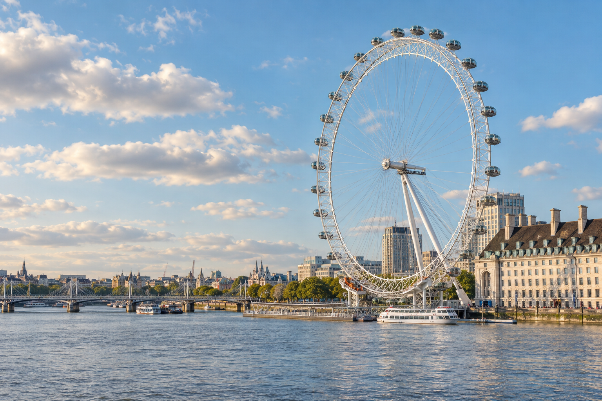
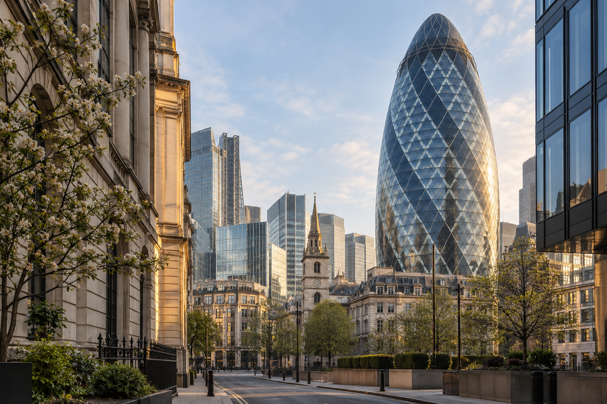
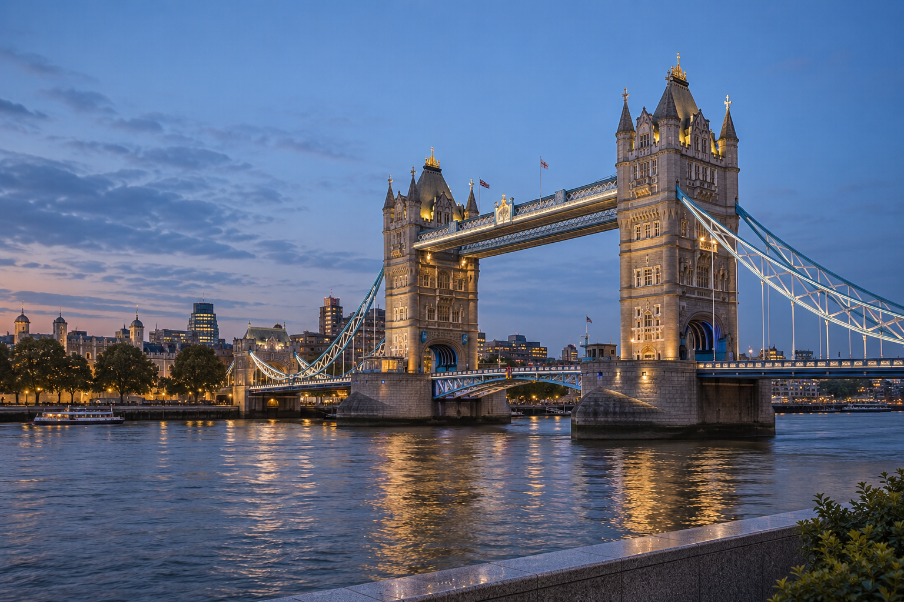
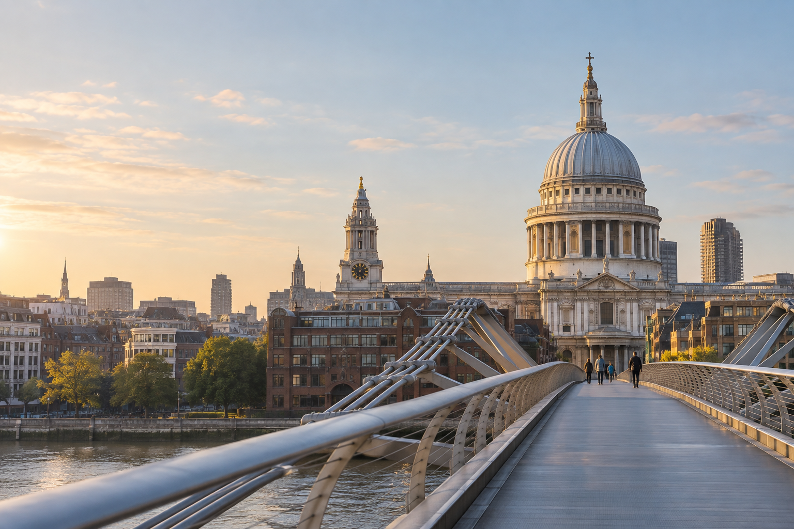
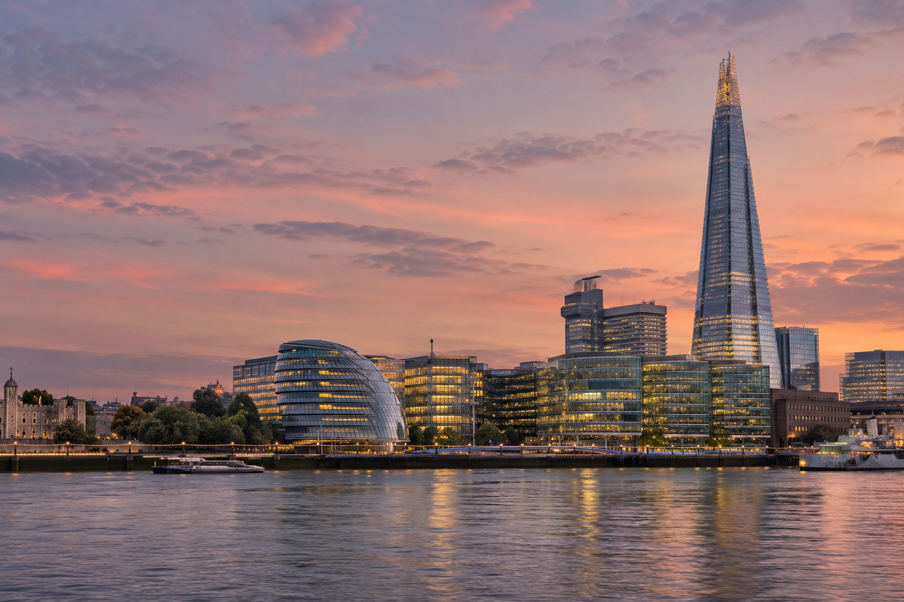
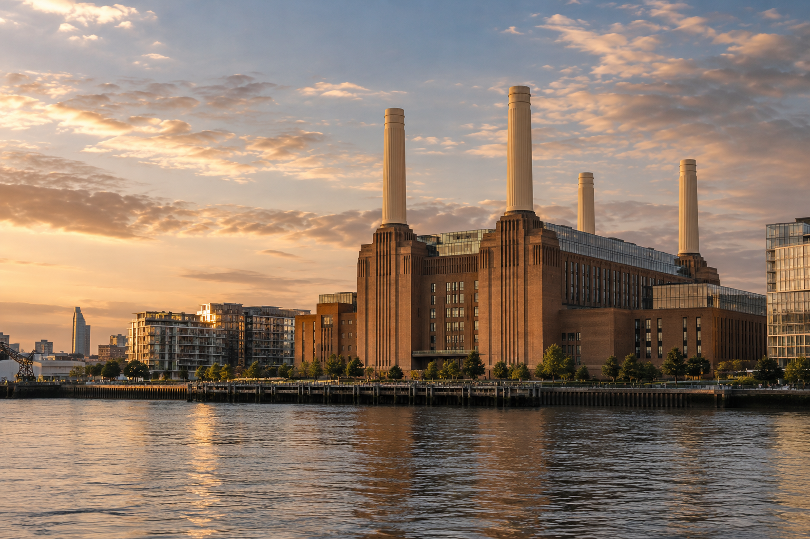
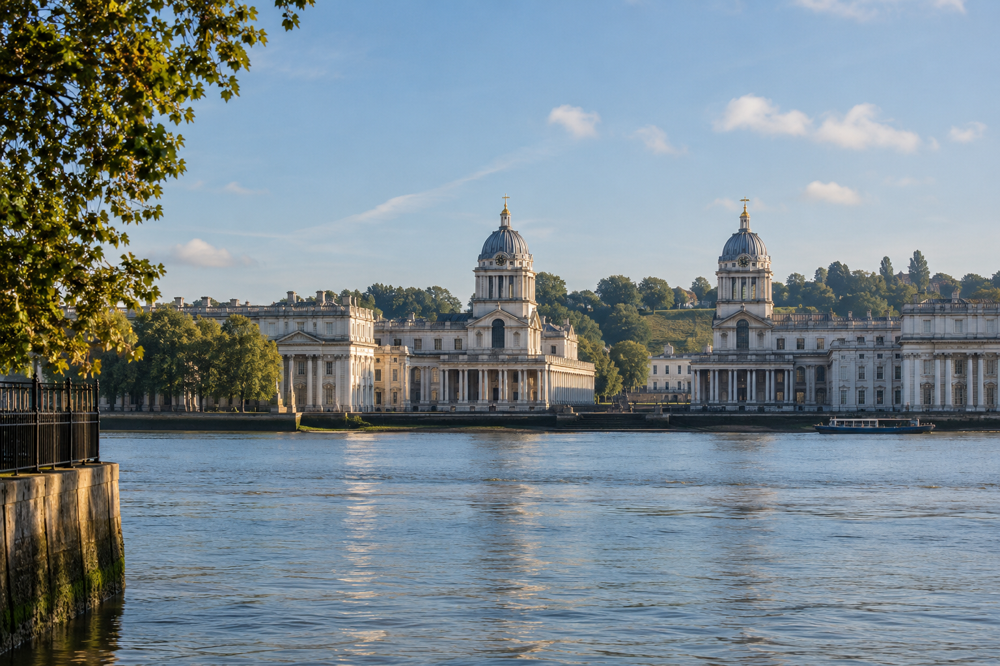
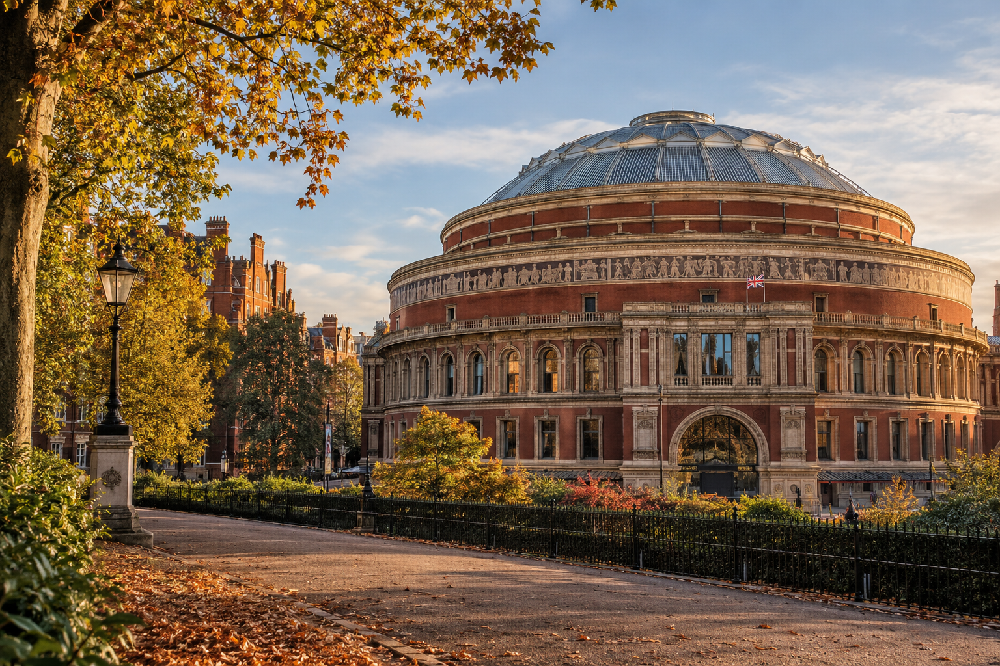
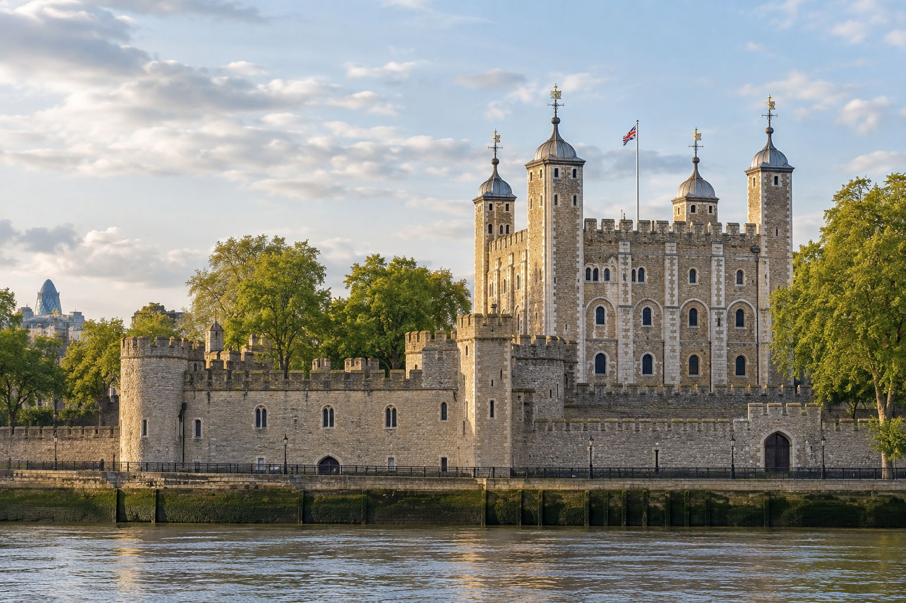

BikeSpot London / Background collection
London, twelve ways.
Familiar landmarks, different light. Twelve generated photographs for review. Open any image to inspect the original.
View collection
Select an image to open it at full size.

London EyeRiver light
Big BenAfter the rain

The GherkinCity morning

Tower BridgeBlue hour

St Paul’sFirst light

The ShardRose dusk

Battersea Power StationGolden hour

GreenwichSunday morning

Royal Albert HallAutumn warmth
St PancrasA bright London morning
Trafalgar SquareFountain light
